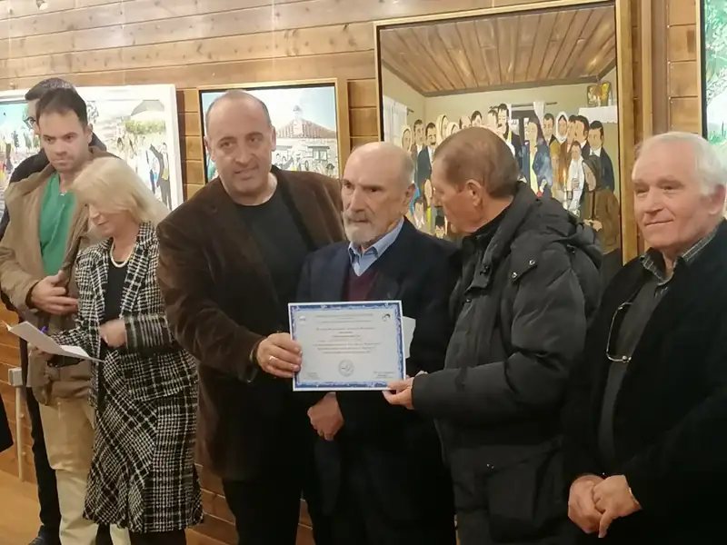
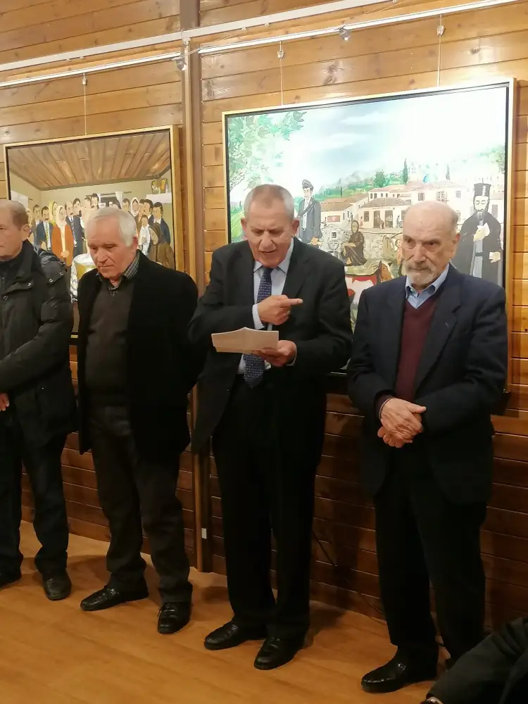
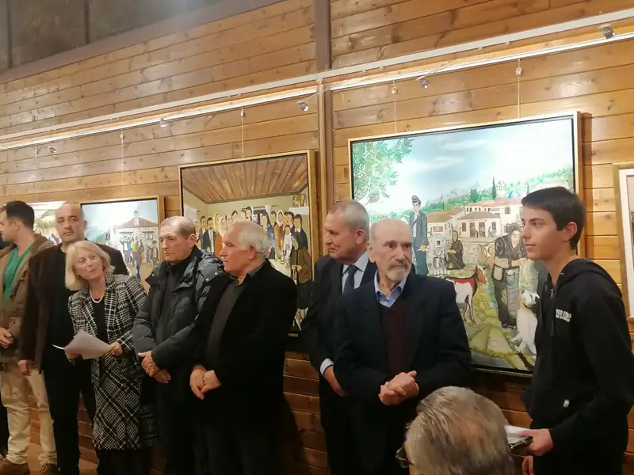
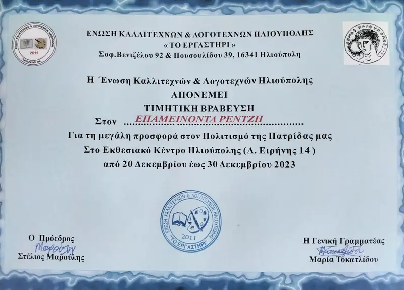

ΕΚΘΕΣΗ: ΗΘΗ - ΕΘΙΜΑ ΚΑΙ ΔΙΑΣΚΕΔΑΣΗ ΣΤΗΝ ΕΛΛΑΔΑ
Την Τετάρτη 20 Δεκεμβρίου στις 7 μ.μ. έγιναν τα εγκαίνια της έκθεσης του μέλους της ένωσης λογοτεχνών και καλλιτεχνών Ηλιούπολης Νώντα Ρεντζή με θέμα: Ήθη – Έθιμα και διασκέδαση στην Ελλάδα κατά την περίοδο του μεσοπολέμου μέχρι και την δεκαετία του 70.
Τα έργα του αξιόλογου λαϊκού ζωγράφου, μας ταξίδεψαν για άλλη μια φορά στα υπέροχα χρόνια εκείνης της εποχής και μας έδωσε την ευκαιρία να ζήσουμε μαζί του μια εμπειρία από τα πλούσια βιώματα της ζωής του.
Μια ζεστή γιορτινή ατμόσφαιρα γεμάτη αγάπη, σεβασμό, όμορφα λόγια, βραβεύσεις… όλα για τον αγαπημένο και αξιόλογο κ. Νώντα Ρεντζή, τον λαϊκό ζωγράφο τον επιστήμονα άνθρωπο που αγαπά την παράδοση, τον τόπο του, την Ελλάδα που με την χρωστήρα του και τα θέματα του έχει κατακτήσει όλους εδώ στην Ηλιούπολη και στην Ελλάδα!!
Αισθανόμαστε υπερήφανοι που είμαστε πλάι του, συνοδοιπόροι στο μονοπάτι που χαράζει προς την παράδοση και τον ακολουθούμε! Του ευχόμαστε καλή υγεία και καλή συνέχεια!
Παρέστησαν οι αιδεσιμότατοι πατέρες της Εκκλησίας Μιχαήλ και Κωνσταντίνος, Δήμαρχος, Αντιδήμαρχοι, Δημοτικοί σύμβουλοι της τωρινής και της μελλοντικής δημοτικής αρχής, φίλες, φίλοι της Ένωσης καλλιτεχνών και πολλοί Ηλιουπολίτες.
Τίμησαν με την παρουσία τους ο Δήμαρχος Γιώργος Χατζηδάκης, ο τ. αρχηγός της αστυνομίας και γενικός γραμματέας του Υπουργείου Προστασίας του πολίτη Κωσταντίνος Τσουβάλας, οι αντιδήμαρχοι Χρήστος Καλαρρύτης, Νίκος Καραβαγγέλης, ο Σταύρος Γεωργάκης, ο τ. Δήμαρχος Θεόδωρος Γεωργάκης, και πολλοί δημοτικοί σύμβουλοι, ο τ. Πρόεδρος του Συλλόγου Αρκάδων Ηλιούπολης, ο αντιπρόεδρος του Μουσείου Εθνικής Αντίστασης Δημήτρης Πανταζόπουλος και άνθρωποι της τέχνης και του πολιτισμού.
Μίλησαν για το έργο του Νώντα Ρεντζή ο κ. Πραξιτέλης Καραχάλιος, ο Αντιδήμαρχος Χρήστος Καλαρρύτης, ο τ. Δήμαρχος Θοδωρής Γεωργάκης, ο πρόεδρος της Ένωσης Λογοτεχνών και Καλλιτεχνών Στέλιος Μαρούλης και ο 13χρονος μαθητής Ραφαήλ.




Αξιότιμοι επίσημοι της πόλεώς μας, Αγαπημένοι μου φίλοι, εσείς οι οποίοι τιμάτε ιδιαιτέρως την Τέχνη και τους Συντελεστές της τοπικής προόδου.
Καλησπέρα σας! Είναι η πρώτη φορά, κατά την οποία η ταπεινότητά του υποφαινόμενου δράττεται της πιο σπουδαίους ευκαιρίας, ώστε να αισθάνεται τη μείζονα τιμή και δεν αποκρύπτει, αφ' ενός τον άκρατο ενθουσιασμό, αλλ' αφ' ετέρου και την πηγαία συγκίνηση να ομιλήσει περί του αγλαΐσματος της Εικαστικής Τέχνης! Είναι τούτο αληθές! Βρίσκω τις αντοχές μου μη επαρκείς, αφού έσπευσα να απαθανατίσω το αμάλγαμα ανθρωπιάς, αλτρουισμού και αγάπης, τον επιστήμονα-κοσμήτορα της παραδοσιακής Εθιμοτυπίας, τον μύστη και διδάσκαλο των πατροπαράδοτων ηθών, τον Αρχιερέα του ομιλητικού καμβά, την ανακαίνιση της σύγχρονης Ελληνικής Ιστορίας, τον Λαογράφο της καρδιάς μας! Και, ασφαλώς, πρόκειται περί του αγαπημένου όλων, του άκρως χαρισματικού φίλου μας! Νώντα Ρεντζή Εξομολογούμαι το πρώτον, ότι αρκούμαι στις προσωπικές εκτιμήσεις μου, πιστεύω δε ότι συμπίπτουν και με τις δικές σας, αγαπημένοι φίλοι Καλλιτέχνες - Λογοτέχνες, αλλά δεν θα επεκταθώ στο ανεκτίμητο συνολικό έργο του επειδή δεν θα διασφάλιζε καμμία περαιτέρω προοπτική και νόημα ο δικός μου ατελής - φτωχός λόγος για να το πράξω, εφόσον τα επιμέρους Έργα του διαθέτουν φωνή και ομιλούν από μόνα τους !
Πραγματικά, διδάσκουν αυτοτελώς την ιστορία μας, τον παραδοσιακό τρόπο ζωής, τα ήθη και τα έθιμα περασμένων γενεών της άλλοτε ένδοξης πατρίδος, το ανθρώπινο συναίσθημα - πληθωρικό στις περισσότερες των περιπτώσεων, τη διατεταγμένη, προφανώς καθαρμένη συνείδηση των Ελλήνων ώστε να συντηρήσουν αλώβητη στον χωροχρόνο την παρουσία της και στον παγκόσμιο Χάρτη και ας πρόκειται για μια ασήμαντη γωνία στον πλανήτη, με καλλιεργημένη την ψυχή τους σε ύψιστα ιδανικά!
Για να συνταχθεί, όμως, αυτό το μακρύ ιστορικό παρελθόν, να καθίσταται κατανοητή αυτή η μετ' απείρων εμποδίων πορεία, η αναγκαστική διάβαση εν μέσω ατραπών, να γίνεται θεατή η απαράμιλλη αγωνιστικότητα να είναι ευδιάκριτη σε όλες τις πτυχές της η Εθνική Συνείδηση, να αναγεννάται το αμίμητο πάθος να υπομιμνήσκεται η αειθαλής ζωτικότητα, η ικμάδα της ψυχής των προγόνων μας στην κάθε ηρωική προσπάθειά τους για τη σωτηρία της Ελλάδος, τι, αλήθεια μας θύμισε, αλλά και προέταξε ως αγωγή ο φανταστικός καλλιτέχνης μας;
Μας υπέμνησε τη γνώση και τη μνήμη! Δύο πρωταρχικά στοιχεία τα οποία οφείλουμε να συντηρούμε ζωντανά στα μύχια της ψυχής μας! Μας υπέμνησε και μάλλον εξειδίκευσε, με ζωντανή εικόνα, τον τιτάνιο αγώνα και την ιερότητά του, αφού δι' αυτού και μόνον θα επανέκαμπτε η Ελευθερία της ζωής, του νου, της κτήσης των ατομικών και κοινωνικών δικαιωμάτων από τον καταδυναστευόμενο Λαό, αλλά και τον παράπλευρο αγώνα του για τη βιοσυντήρησή του.
Προ πάντων όλων, όπως, γνωστοποίησε με απόλυτη σαφήνεια, μέσω του σπουδαιότατου του Έργου του, το θλιβερότατο θέσφατο, για να αφιχθεί ενδόξως η Εθνική παλιγγενεσία: <<Ελευθερία ή θάνατος!>> Και αυτή την ιστορική μνήμη του ο καλλιτέχνης δια των Έργων του, αδιαμφισβήτητος ιστορικός, κατά την ταπεινή εκτίμησή μου, μέσω του καμβά του, πληθωρικός Νώντας μας, την στοιχειοθέτησε με την προσεκτική μελέτη άπειρων σελίδων του Ελληνικού Ιστορικού γίγνεσθαι έστω και αν εξ απαλών ονύχων διεπιστώθη ότι κατείχε πολλές γνώσεις και εφέρετο να έχει πολλά ακούσματα, ως απόγονος και ο ίδιος Κλεφτών και Αρματολών της επίσης ένδοξου γενέτειράς του Αιτωλοακαρνανίας! Εκκίνησε δε την λεπτομερή ανασκόπηση και ανάδειξη μέσω των αξιών ειδικής μνείας Έργων του, με την προοπτική του να τιμηθούν σε απανταχού Έλληνες και οι πολυάριθμοι της διασποράς, να γνωρίσουν και να τιμήσουν τους άπειρους θυσιασθέντες στον υπέρ Πατρίδος Βωμό σε μια ύστερη υπέρ αναπαύσεως της ψυχής τους σιωπηρή ικεσία - προοπτική!
Αλλά, καθίσταται αναγκαία η διατύπωση ενταύθα της προσωπικής μου γνώμης, πεποίθησης θα τολμούσα, για έναν φύσει Εθνικό - και θεωρώ ότι μου το επιτρέπουν όλες οι συνθήκες να το πράττω- Εικαστικό καλλιτέχνη -Νώντα Ρεντζή - παρά το αναμφίβολο γεγονός ότι, χαρακτηρίζοντάς τον ούτω, προσκρούω στην ταπεινότητα του χαρακτήρα του, στην αδιαμφισβήτητως υπαρκτή ανθρώπινη συστολή του, στο ανθρώπινο μεγαλείο του, αλλά και δεν συμμερίζομαι, επ' αυτού, αντίθετες θέσεις, διότι δεν επιτρέπονται εκπτώσεις για αυτόν τον πληθωρικό καλλιτέχνη, άλλωστε δεν έχει να ζηλέψει στοιχεία των άλλων ιερών θηρίων της τέχνης και του πολιτισμού! Εξ άλλου, ο εσωτερικός του υπέροχος διάκοσμος τον κατατάσσει στην κορωνίδα των σπουδαίων του πνεύματος! Εν τούτοις είναι λυπηρόν το γεγονός ότι έως άρτι, ουδείς συγκροτημένος πολιτιστικός οργανισμός, ουδεμία οργανωμένη σύγχρονη διοίκηση, καμία πανεπιστημιακή σύγκλητος, ούτε η εμφορούμενη από πλείστες καινοτόμες ιδεές Ακαδημαϊκή κοινότητα προέβη ή δεν προέβησαν σε ανάδειξή του σε κορυφαίο καλλιτέχνη, παρ ότι κλασικότερα εκ των λίαν πληθωρικών έργων του κοσμούν αίθουσες δημοσίων αρχών, συνεπώς του οφείλουν οι σχετικώς αρμόδιοι την μέγιστη τιμή! Η ταπεινότητά μου θα εκλιπαρούσε, αν και θα έπρεπε να απαιτεί ως ο απλοϊκότερος πολίτης αυτής της αιώνιας πατρίδας, να απονεμηθεί στον γιατρό- καλλιτέχνη Νώντα Ρεντζή ο τίτλος τιμής του ως Ακαδημαϊκού, αφού συγκεντρώνει όλα τα αναγκαία προσόντα, πληροί όλες τις προϋποθέσεις και εξισώνεται με καθηγητή και πρέπει να αναγορευθεί σε διδάκτορα πανεπιστημίου!
Μια άλλη Πατρίδα, ενδεχομένως, θα υιοθετούσε όλες τις ανωτέρω σκέψεις του υποφαινομένου. Αγαπημένε φίλε Νώντα σε ευχαριστούμε που μας διδάσκεις και μας μορφώνεις. Να σε έχει καλά ο Πανάγαθος και Πανοικτίρμων Θεός μας! Σου εύχομαι ακόμη μεγαλύτερες επιτυχίες! Φίλτατε Πρόεδρε, Μηχανοδηγέ του τρένου, σε ευχαριστούμε που από το τιμόνι του και για πολλά χρόνια, μας προσφέρεις με προθυμία αυτό το ειδυλλιακό ταξίδι της κορυφαίας Τέχνης! Να παραμένεις πάντα ο έφηβος, με την ικμάδα του χαρακτήρα σου και να έχεις την Θεία μέριμνα του Πατρός Παντοκράτορος, όπως κι όλοι μας!
Καλά Χριστούγεννα!
